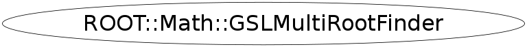

class ROOT::Math::GSLMultiRootFinder
Class for Multidimensional root finding algorithms bassed on GSL. This class is used to solve a
non-linear system of equations:
f1(x1,....xn) = 0
f2(x1,....xn) = 0
..................
fn(x1,....xn) = 0
See the GSL <A HREF="http://www.gnu.org/software/gsl/manual/html_node/Multidimensional-Root_002dFinding.html"> online manual</A> for
information on the GSL MultiRoot finding algorithms
The available GSL algorithms require the derivatives of the supplied functions or not (they are
computed internally by GSL). In the first case the user needs to provide a list of multidimensional functions implementing the
gradient interface (ROOT::Math::IMultiGradFunction) while in the second case it is enough to supply a list of
functions impelmenting the ROOT::Math::IMultiGenFunction interface.
The available algorithms requiring derivatives (see also the GSL
<A HREF="http://www.gnu.org/software/gsl/manual/html_node/Algorithms-using-Derivatives.html">documentation</A> )
are the followings:
<ul>
<li><tt>ROOT::Math::GSLMultiRootFinder::kHybridSJ</tt> with name <it>"HybridSJ"</it>: modified Powell's hybrid
method as implemented in HYBRJ in MINPACK
<li><tt>ROOT::Math::GSLMultiRootFinder::kHybridJ</tt> with name <it>"HybridJ"</it>: unscaled version of the
previous algorithm</li>
<li><tt>ROOT::Math::GSLMultiRootFinder::kNewton</tt> with name <it>"Newton"</it>: Newton method </li>
<li><tt>ROOT::Math::GSLMultiRootFinder::kGNewton</tt> with name <it>"GNewton"</it>: modified Newton method </li>
</ul>
The algorithms without derivatives (see also the GSL
<A HREF="http://www.gnu.org/software/gsl/manual/html_node/Algorithms-without-Derivatives.html">documentation</A> )
are the followings:
<ul>
<li><tt>ROOT::Math::GSLMultiRootFinder::kHybridS</tt> with name <it>"HybridS"</it>: same as HybridSJ but using
finate difference approximation for the derivatives</li>
<li><tt>ROOT::Math::GSLMultiRootFinder::kHybrid</tt> with name <it>"Hybrid"</it>: unscaled version of the
previous algorithm</li>
<li><tt>ROOT::Math::GSLMultiRootFinder::kDNewton</tt> with name <it>"DNewton"</it>: discrete Newton algorithm </li>
<li><tt>ROOT::Math::GSLMultiRootFinder::kBroyden</tt> with name <it>"Broyden"</it>: Broyden algorithm </li>
</ul>
@ingroup MultiRoot
This class is also known as (typedefs to this class)
ROOT::Math::MultiRootFinderFunction Members (Methods)
public:
| virtual | ~GSLMultiRootFinder() |
| int | AddFunction(const ROOT::Math::IMultiGenFunction& func) |
| void | Clear() |
| unsigned int | Dim() const |
| const double* | Dx() const |
| const double* | FVal() const |
| ROOT::Math::GSLMultiRootFinder | GSLMultiRootFinder(ROOT::Math::GSLMultiRootFinder::EType type) |
| ROOT::Math::GSLMultiRootFinder | GSLMultiRootFinder(ROOT::Math::GSLMultiRootFinder::EDerivType type) |
| ROOT::Math::GSLMultiRootFinder | GSLMultiRootFinder(const char* name = 0) |
| int | Iterations() const |
| const char* | Name() const |
| int | PrintLevel() const |
| void | PrintState(ostream& os = std::cout) |
| static void | SetDefaultMaxIterations(int maxiter) |
| static void | SetDefaultTolerance(double abstol, double reltol = 0) |
| void | SetPrintLevel(int level) |
| void | SetType(ROOT::Math::GSLMultiRootFinder::EType type) |
| void | SetType(ROOT::Math::GSLMultiRootFinder::EDerivType type) |
| void | SetType(const char* name) |
| bool | Solve(const double* x, int maxIter = 0, double absTol = 0, double relTol = 0) |
| int | Status() const |
| const double* | X() const |
protected:
| void | ClearFunctions() |
| pair<bool,int> | GetType(const char* name) |
private:
| ROOT::Math::GSLMultiRootFinder | GSLMultiRootFinder(const ROOT::Math::GSLMultiRootFinder&) |
| ROOT::Math::GSLMultiRootFinder& | operator=(const ROOT::Math::GSLMultiRootFinder&) |
Data Members
public:
| enum EDerivType { | kHybridSJ | |
| kHybridJ | ||
| kNewton | ||
| kGNewton | ||
| }; | ||
| enum EType { | kHybridS | |
| kHybrid | ||
| kDNewton | ||
| kBroyden | ||
| }; |
private:
| vector<ROOT::Math::IMultiGenFunction*> | fFunctions | ! transient Vector of the functions |
| int | fIter | current numer of iterations |
| int | fPrintLevel | print level |
| ROOT::Math::GSLMultiRootBaseSolver* | fSolver | |
| int | fStatus | current status |
| int | fType | type of algorithm |
| bool | fUseDerivAlgo | algorithm using derivative |
Class Charts
{kind=link}
{kind=link}
{kind=link}
{kind=link}

Function documentation
GSLMultiRootFinder(EType type)
create a multi-root finder based on an algorithm not requiring function derivative
GSLMultiRootFinder(EDerivType type)
create a multi-root finder based on an algorithm requiring function derivative
GSLMultiRootFinder(const char* name = 0)
create a multi-root finder using a string.
The names are those defined in the GSL manuals
after having remived the GSL prefix (gsl_multiroot_fsolver).
Default algorithm is "hybrids" (without derivative).
GSLMultiRootFinder(const GSLMultiRootFinder &)
usually copying is non trivial, so we make this unaccessible
int AddFunction(const ROOT::Math::IMultiGenFunction& func)
add (set) a single function fi(x1,...xn) which is part of the system of
specifying the begin and end of the iterator.
If using a derivative type algorithm the function must implement the
ROOOT::Math::IMultiGradFunction interface
Return the current number of function in the list and 0 if failed to add the function
unsigned int Dim() const
return the number of sunctions set in the class.
The number must be equal to the dimension of the functions
{ return fFunctions.size(); }const double * FVal() const
return the function values f(X) solving the system i.e. they must be close to zero at the solution
bool Solve(const double* x, int maxIter = 0, double absTol = 0, double relTol = 0)
Find the root starting from the point X;
Use the number of iteration and tolerance if given otherwise use
default parameter values which can be defined by
the static method SetDefault...
void SetPrintLevel(int level)
set print level
level = 0 quiet (no messages print)
= 1 print only the result
= 3 max debug. Print result at each iteration
{ fPrintLevel = level; }void SetDefaultTolerance(double abstol, double reltol = 0)
-- static methods to set configurations set tolerance (absolute and relative) relative tolerance is only use to verify the convergence do it is a minor parameter